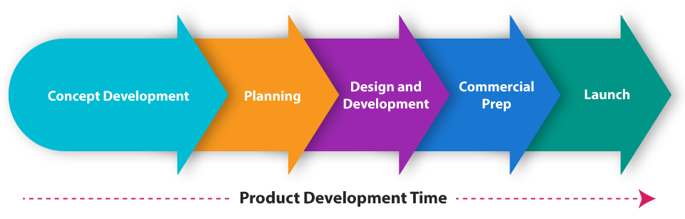

In each of the five phases it is important to remember that all of the different areas of the company need to be involved to maximize the success of the product and/or service.
Without marketing’s input how would we know what customers really want or projected sales? Without purchasing how could we ensure we get the right suppliers with the right products. Without accounting, how would we ensure we get the costs correct and know if we can be profitable with this new development. Without operations and supply chain personnel how would we get the prototypes, raw materials, warehousing, manufacturing or shipping completed?
The development model we’ve been examining is laid out sequentially. It appears each stage is completed then handed to the next phase—in sequence as shown here in Figure 4. This sequential development process model is extremely effective when a huge investment is required or safety is of the highest priority. Think of building space ships at NASA or nuclear reactors. It can be effective but very slow.
Figure 4: Example of Sequential Product/Service Design Flow